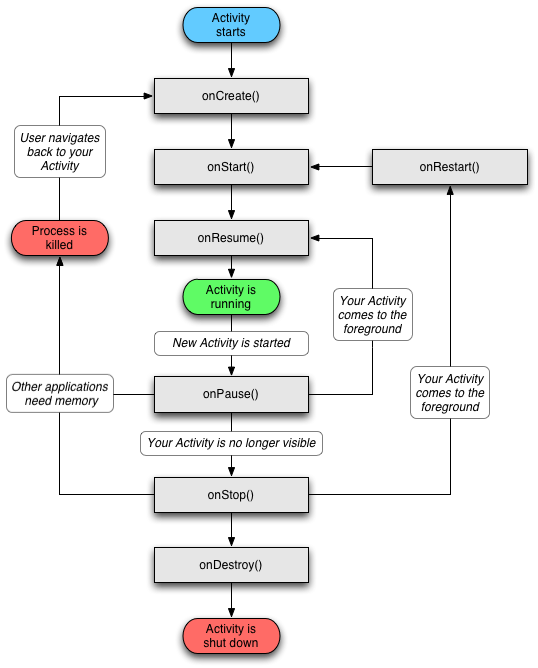

S02_E03_Activity生命周期三
Activity对象的状态- Resumed: Activity对象处于运行状态
- Paused: 另一个Activity位于前端，但是本Activity还可见
- Stopped: 另一个Activity位于前端，完全遮挡本Activity
- # Paused 和 Stopped 依然是活跃状态，没有释放资源，需要手动定义释放
- 成对的生命周期函数
- 
codes: https://github.com/RockyNiu/LearningAndroid/tree/master/S02_E03_LifeCycle